Source & review coverageمنبع و پوشش مرور
Main text, appendices, figure and table source pages, and biblio graphy reviewed. Figure/table images retain exact original values. Only explicitly printed numerical results are trans cr i bed; plotted curves are not digitized. Project-role recommendations are separate reviewer judgments.متن، پیوستها، صفحات شکل و جدول و کتابنامه مرور شدهاند. تصاویر منبع مقادیر اصلی را حفظ میکنند. فقط اعداد صریح چاپشده ثبت و منحنیها تخمین زده نشدهاند. پیشنهاد نقش در پروژه، قضاوت مستقل مرورگر است.
Identity, scope and research questionsمشخصات، دامنه و پرسشها
Mosteiro-Romero et al., Building and Environment 305 (2026), 115265. DBN here means Diagnostic Bayesian Network. The paper develops and partially validates a whole-HVAC diagnostic network in an occupied Netherlands office, combining component, control and sensor faults with comfort symptoms. Its scope/contribution sections state objectives; no numbered H 1/H 2 hypothesis list is presented.Mosteiro-Romero و همکاران، ۲۰۲۶. DBN در این مقاله شبکه بیزی تشخیصی است. هدف ساخت و اعتبارسنجی جزئی تشخیص کل HVAC در ساختمان اداری واقعی هلند با خطای تجهیز، کنترل، حسگر و نشانه آسایش است. فهرست فرضیه شمارهگذاریشده ارائه نشده است. Source · PDF p. 1Source · PDF p. 2Source · PDF p. 3
Structure and inference implementationساختار و پیادهسازی استنتاج
The four-symptoms/three-faults methodology maps expected operation and P&ID/control documentation to a DAG. The case network has 43 fault nodes, 50 symptom nodes and 177 edges. Fault/symptom variables are binary; Noisy-OR reduces conditional-table specification. pgmpy Discrete Bayesian Network with exact Variable Elimination computes posteriors; a fault is present at posterior ≥50%.روش چهار نشانه/سه خطا، رفتار مورد انتظار و اسناد کنترل را به گراف بدون دور نگاشت میکند. شبکه موردی ۴۳ خطا، ۵۰ نشانه و ۱۷۷ یال دارد. متغیرها دودویی و CPT با Noisy-OR ساخته میشود. استنتاج دقیق حذف متغیر در pgmpy و آستانه پسین ۵۰٪ استفاده شده است. Source · PDF p. 3Source · PDF p. 7Source · PDF p. 8
Measurements are resampled to 10 minutes (mean for numerical variables, mode for categorical), change-only control signals are forward-filled, constant sensors over the historical period are dropped, and missing samples excluded. Hourly-mode symptom detection was selected after comparing subhourly, hourly threshold and daily variants. Temperature sensor checks wait three hours after system shutdown to avoid transients.دادهها به ده دقیقه بازنمونهبرداری میشوند؛ میانگین برای عددی و نما برای دستهای است. سیگنال کنترل نگهداری رو به جلو، حسگر ثابت حذف و نمونه گمشده کنار گذاشته میشود. تشخیص نمای ساعتی با روشهای زیرساعتی و روزانه مقایسه شده است. برای اثر گذرا سه ساعت پس از خاموشی صبر میشود. Source · PDF p. 7Source · PDF p. 8Source · PDF p. 9
Data, fault experiments and parameter sensitivityداده، آزمایش خطا و حساسیت پارامتر
Historical evaluation uses 2022–2023 BMS records without fault labels, so it cannot produce verified accuracy. Six days of 2024 AHU-control experiments supply labeled partial validation, including simultaneous faults. Safety/operator restrictions prevented boiler/chiller injection. September 1–10, 2024 operational testing follows occupant complaints of suspected ventilation malfunction.مرور تاریخی ۲۰۲۲–۲۰۲۳ فاقد برچسب خطا و مناسب محاسبه دقت تأییدشده نیست. شش روز آزمایش کنترل AHU در ۲۰۲۴ برای اعتبارسنجی جزئی برچسبدار، شامل خطاهای همزمان، استفاده شده است. محدودیت ایمنی مانع تزریق خطای بویلر/چیلر شد. آزمون عملیاتی سپتامبر پس از شکایت ساکنان انجام شده است. Source · PDF p. 9
Threshold cases: knowledge-based, 0.5σ, σ and 3σ. Prior component/sensor probabilities vary across .5%,2%,5%,10%; control priors across 1%,5%,10%. Conditional cases are Uniform 95%, Weighted strong 90%/weak 30%, and distance-decaying P&ID. These are internal parameter comparisons, not a controlled leaderboard against independent FDD algorithms.آستانه دانشی و ۰٫۵، ۱ و ۳ انحراف معیار؛ پیشین تجهیز/حسگر ۰٫۵،۲،۵،۱۰٪ و کنترل ۱،۵،۱۰٪ مقایسه شدهاند. CPT یکنواخت ۹۵٪، وزندار قوی۹۰/ضعیف۳۰ و مبتنی بر فاصله P&ID است. اینها مقایسه داخلی پارامترند، نه رقابت کنترلشده الگوریتمهای مستقل. Source · PDF p. 7Source · PDF p. 8
Diagnostic outcomes and their denominatorsنتایج و مخرج معیارها
Uniform CPT with σ thresholds gives CR 87.8%, MR 29.2%, FAR 3.8%, precision 90.4%, F 1 79.4% and balanced accuracy 83.5% (means over prior combinations). Lowest MR is 27.5% at 0.5σ. All miss rates exceed 25%. Sensor faults are excluded from partial performance scoring; simultaneous faults in different AHUs count as concurrent individual outcomes, while subcomponent faults within one AHU aggregate into one AHU fault.CPT یکنواخت با آستانه σ: نرخ طبقهبندی۸۷٫۸٪، عدمکشف۲۹٫۲٪، هشدارکاذب۳٫۸٪، دقت مثبت۹۰٫۴٪، F1 برابر۷۹٫۴٪ و دقت متوازن۸۳٫۵٪. کمینه عدمکشف۲۷٫۵٪ است. خطاهای حسگر از امتیاز جزئی کنار گذاشته شده و خطاهای زیرجزء یک AHU تجمیع میشوند. Source · PDF p. 12
Author-stated limitations and ongoing workمحدودیتها و کار جاری نویسندگان
The authors stress partial validation, unreliable sensing, absence of fault-free historical data, documentation/manual-effort dependence and case-specific transferability. Sensor biases can con ta min ate historical thresholds. More component fault experiments, reusable DBN modules, automated P&ID interpretation and occupant feedback are proposed; occupant feedback is explored as future incorporation rather than implemented quantitative evidence here.نویسندگان اعتبارسنجی جزئی، حسگر نامطمئن، نبود تاریخچه سالم، نیاز به اسناد و کار دستی و انتقالپذیری موردی را محدودیت میدانند. سوگیری حسگر آستانه تاریخی را آلوده میکند. آزمایش بیشتر، ماژول قابل استفاده مجدد، تفسیر خودکار P&ID و بازخورد ساکن پیشنهاد شدهاند؛ بازخورد ساکن هنوز شاهد کمی پیادهسازیشده نیست. Source · PDF p. 16
Key reported resultsنتایج کلیدی گزارششده
Selected setting: CR 87.8%, MR 29.2%, FAR 3.8%; network 43 faults/50 symptoms/177 edges.تنظیم منتخب: طبقهبندی۸۷٫۸٪، عدمکشف۲۹٫۲٪، هشدارکاذب۳٫۸٪؛ شبکه۴۳ خطا/۵۰ نشانه/۱۷۷ یال. Source · PDF p. 7Source · PDF p. 12
Figures, captions & extracted evidenceشکلها، عنوانها و شواهد استخراجشده
Figure 1
Graph & dependenciesگراف و وابستگیها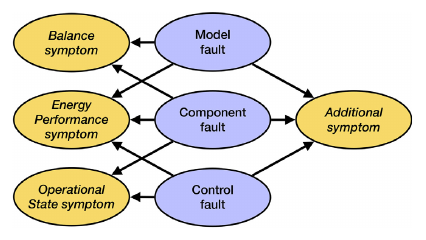
How to read this figureراهنمای خواندن شکل
Start with the node types and follow the connections using the paper’s notation. Distinguish faults, observed evidence and intermediate variables; graph connectivity alone is not a measured intervention effect.ابتدا نوع گره را با نمادگذاری مقاله مشخص و سپس اتصالها را دنبال کنید. خطا، شاهد مشاهدهشده و متغیر میانی را جدا کنید؛ اتصال گراف بهتنهایی اثر اندازهگیریشده مداخله نیست.
Reader guidance · not an additional author claimراهنمای مطالعه · ادعای اضافی نویسنده نیستWhat this figure showsاین شکل چه نشان میدهد؟
The 4S3F example links model, component and control fault nodes to balance, energy-performance, operational-state and additional symptoms. Shared symptom connections illustrate why one observed symptom need not identify a unique cause.نمونه 4S3F گرههای خطای مدل، تجهیز و کنترل را به نشانههای موازنه، عملکرد انرژی، وضعیت عملیاتی و نشانه اضافی متصل میکند. اتصال مشترک نشانهها نشان میدهد که یک نشانه مشاهدهشده لزوماً علت یکتا را مشخص نمیکند.
Reported values & evidence limitsمقادیر گزارششده و حدود شواهد
Illustrative causal template; it is not a numerical accuracy plot.الگوی علّی نمونه است و نمودار دقت عددی نیست.
Figure 2
Probabilistic evidenceشواهد احتمالاتی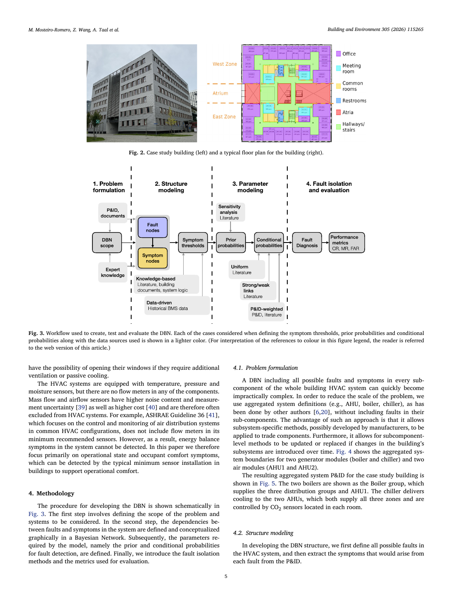
How to read this figureراهنمای خواندن شکل
Compare the hypotheses using the legend and the displayed cases. A posterior is the model’s belief; assess it alongside the reported diagnostic outcomes, rather than treating confidence alone as correctness.فرضیهها را با راهنمای رنگ و حالتهای نمایشدادهشده مقایسه کنید. پسین باور مدل است؛ آن را همراه نتیجه تشخیص بسنجید و اطمینان را بهتنهایی معادل صحت نگیرید.
Reader guidance · not an additional author claimراهنمای مطالعه · ادعای اضافی نویسنده نیستWhat this figure showsاین شکل چه نشان میدهد؟
The office photograph and floor plan locate the real case-study systems and zones.تصویر و پلان دفتر، سامانهها و ناحیههای مطالعه واقعی را مشخص میکنند.
Reported values & evidence limitsمقادیر گزارششده و حدود شواهد
Building geometry/context, not comparative experimental data.زمینه و هندسه ساختمان است،نه داده مقایسه الگوریتم.
Figure 3
Probabilistic evidenceشواهد احتمالاتیHow to read this figureراهنمای خواندن شکل
Compare the hypotheses using the legend and the displayed cases. A posterior is the model’s belief; assess it alongside the reported diagnostic outcomes, rather than treating confidence alone as correctness.فرضیهها را با راهنمای رنگ و حالتهای نمایشدادهشده مقایسه کنید. پسین باور مدل است؛ آن را همراه نتیجه تشخیص بسنجید و اطمینان را بهتنهایی معادل صحت نگیرید.
Reader guidance · not an additional author claimراهنمای مطالعه · ادعای اضافی نویسنده نیستWhat this figure showsاین شکل چه نشان میدهد؟
Workflow separates problem/structure/parameter modeling, historical evaluation, partial experiments and operational testing.گردشکار تعریف مسئله،ساختار،پارامتر،ارزیابی تاریخی،آزمایش جزئی و آزمون عملیاتی را جدا میکند.
Reported values & evidence limitsمقادیر گزارششده و حدود شواهد
Assumption cases correspond to Table 3; validation stages must not be conflated.سناریوهای فرض با جدول۳مرتبطاند؛مراحل اعتبارسنجی نباید یکی فرض شوند.
Figure 4
Graph & dependenciesگراف و وابستگیها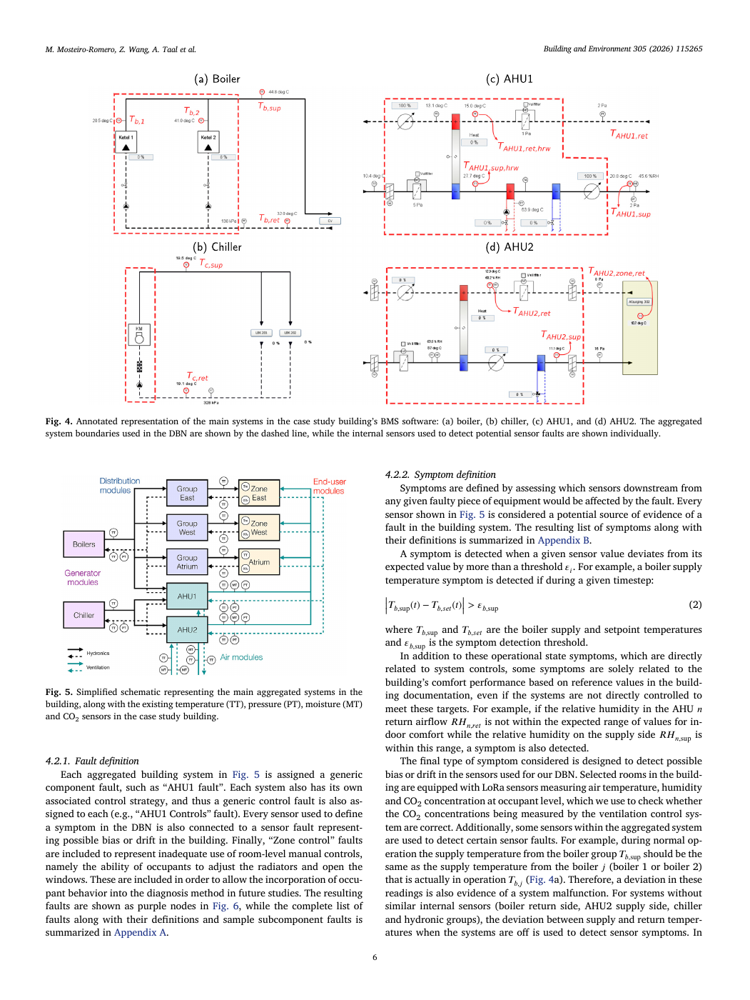
How to read this figureراهنمای خواندن شکل
Start with the node types and follow the connections using the paper’s notation. Distinguish faults, observed evidence and intermediate variables; graph connectivity alone is not a measured intervention effect.ابتدا نوع گره را با نمادگذاری مقاله مشخص و سپس اتصالها را دنبال کنید. خطا، شاهد مشاهدهشده و متغیر میانی را جدا کنید؛ اتصال گراف بهتنهایی اثر اندازهگیریشده مداخله نیست.
Reader guidance · not an additional author claimراهنمای مطالعه · ادعای اضافی نویسنده نیستWhat this figure showsاین شکل چه نشان میدهد؟
BMS panels show boiler, chiller and two AHUs with aggregated system/sensor evidence.پنلBMSبویلر،چیلرو دوAHUوشاهدهای سامانه را نمایش میدهد.
Reported values & evidence limitsمقادیر گزارششده و حدود شواهد
Original operational labels are retained; no sensor readings are inferred from screen shots.برچسب عملیاتی حفظ شده و هیچ قرائت حسگر از تصویر حدس زده نشده است.
Figure 5
Comparison & resultsمقایسه و نتایج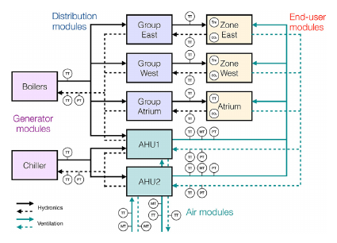
How to read this figureراهنمای خواندن شکل
Check the axes, units, panel labels and the caption’s definition of better performance. Compare methods under the stated conditions; keep uncertainty, tradeoffs and normalization separate from headline gains.محور، واحد، پنل و تعریف عملکرد بهتر در عنوان را بررسی کنید. روشها را در شرایط بیانشده مقایسه و عدمقطعیت، مصالحه و نرمالسازی را از بهبود شاخص اصلی جدا نگه دارید.
Reader guidance · not an additional author claimراهنمای مطالعه · ادعای اضافی نویسنده نیستWhat this figure showsاین شکل چه نشان میدهد؟
P&ID aggregation links generator, distribution and end-use modules to potential fault propagation.تجمیعP&IDمولد،توزیع و مصرف را به انتشار خطا پیوند میدهد.
Reported values & evidence limitsمقادیر گزارششده و حدود شواهد
Topology is expert/system-documentation input, not a learned intervention effect.توپولوژی ورودی خبره/سنداست،نه اثرمداخله آموختهشده.
Figure 6
Graph & dependenciesگراف و وابستگیها
How to read this figureراهنمای خواندن شکل
Start with the node types and follow the connections using the paper’s notation. Distinguish faults, observed evidence and intermediate variables; graph connectivity alone is not a measured intervention effect.ابتدا نوع گره را با نمادگذاری مقاله مشخص و سپس اتصالها را دنبال کنید. خطا، شاهد مشاهدهشده و متغیر میانی را جدا کنید؛ اتصال گراف بهتنهایی اثر اندازهگیریشده مداخله نیست.
Reader guidance · not an additional author claimراهنمای مطالعه · ادعای اضافی نویسنده نیستWhat this figure showsاین شکل چه نشان میدهد؟
Whole-HVAC DAG groups zone and sensor nodes for readability while retaining system/control dependencies.گراف کلHVACبرایخوانایی گره ناحیه/حسگر راگروهبندی و وابستگی کنترل راحفظ میکند.
Reported values & evidence limitsمقادیر گزارششده و حدود شواهد
Text reports 43 fault nodes,50 symptoms,177 edges; grouped picture is not the full node count.متن۴۳خطا،۵۰نشانه،۱۷۷یال دارد؛شمار تصویرگروهی شمارکامل نیست.
Figure 7
Comparison & resultsمقایسه و نتایج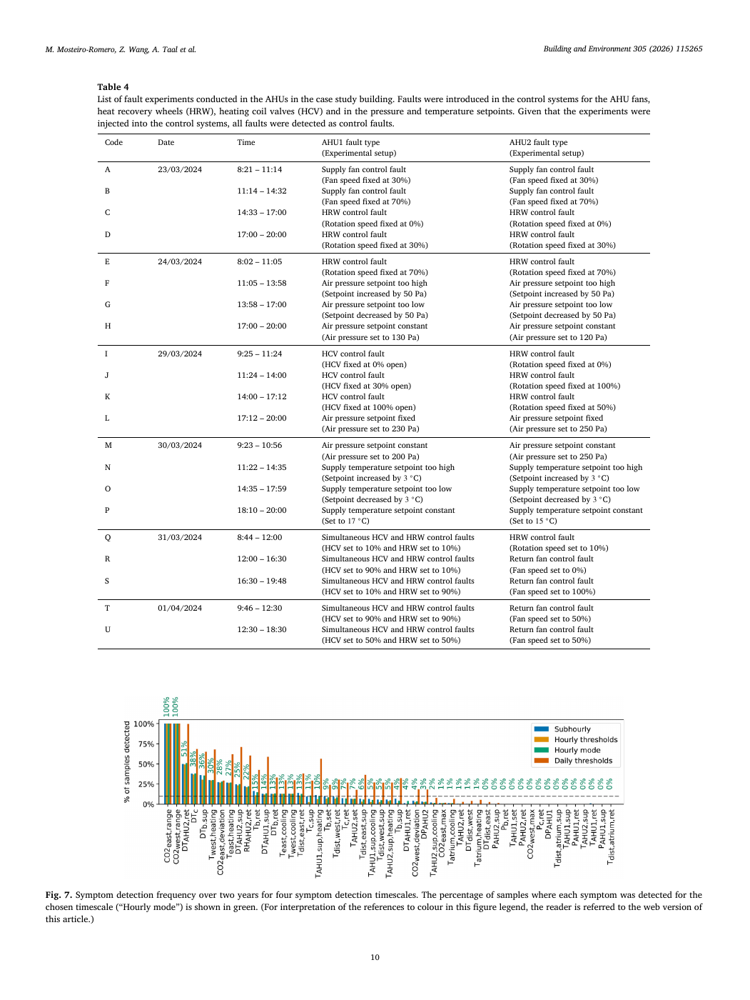
How to read this figureراهنمای خواندن شکل
Check the axes, units, panel labels and the caption’s definition of better performance. Compare methods under the stated conditions; keep uncertainty, tradeoffs and normalization separate from headline gains.محور، واحد، پنل و تعریف عملکرد بهتر در عنوان را بررسی کنید. روشها را در شرایط بیانشده مقایسه و عدمقطعیت، مصالحه و نرمالسازی را از بهبود شاخص اصلی جدا نگه دارید.
Reader guidance · not an additional author claimراهنمای مطالعه · ادعای اضافی نویسنده نیستWhat this figure showsاین شکل چه نشان میدهد؟
Four timescales compare symptom-detection frequency across 2022–2023.چهارمقیاس زمانی،فراوانی کشف نشانه در۲۰۲۲–۲۰۲۳را مقایسه میکنند.
Reported values & evidence limitsمقادیر گزارششده و حدود شواهد
The source heatmap frequencies are retained; no new percentages are estimated.درصدهای نقشه اصلی حفظ و درصد تازه تخمین زده نشده است.
Figure 8
Time & behaviorزمان و رفتار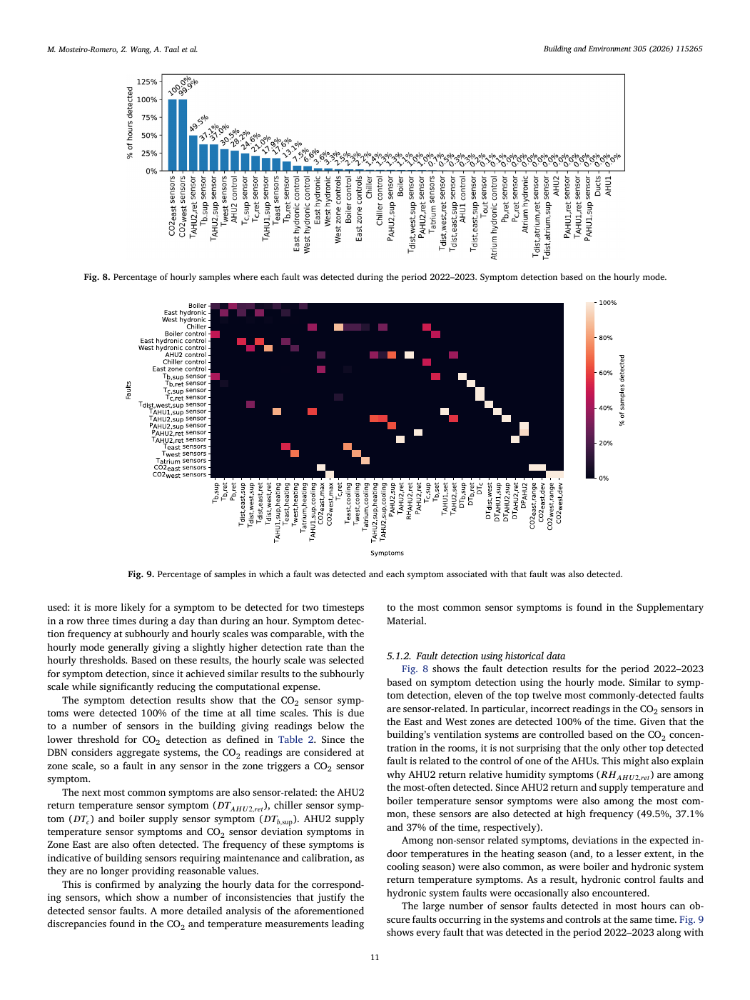
How to read this figureراهنمای خواندن شکل
Read the time window and units before comparing traces. Match each curve to its legend and the same operating conditions; unlabeled samples are not numerical measurements extracted by this report.پیش از مقایسه مسیرها، بازه زمان و واحدها را بخوانید. هر منحنی را به راهنما و شرایط یکسان وصل کنید؛ نمونه بدون برچسب، اندازهگیری عددی استخراجشده در این گزارش نیست.
Reader guidance · not an additional author claimراهنمای مطالعه · ادعای اضافی نویسنده نیستWhat this figure showsاین شکل چه نشان میدهد؟
Hourly fault-detection frequencies show persistent sensor-related diagnoses in historical records.فراوانی تشخیص ساعتی،خطای حسگر پایداردر سابقه را نشان میدهد.
Reported values & evidence limitsمقادیر گزارششده و حدود شواهد
Historical frequencies lack ground-truth labels and therefore are not accuracy estimates.فراوانی تاریخی برچسب حقیقت ندارد و تخمین دقت نیست.
Figure 9
Time & behaviorزمان و رفتارHow to read this figureراهنمای خواندن شکل
Read the time window and units before comparing traces. Match each curve to its legend and the same operating conditions; unlabeled samples are not numerical measurements extracted by this report.پیش از مقایسه مسیرها، بازه زمان و واحدها را بخوانید. هر منحنی را به راهنما و شرایط یکسان وصل کنید؛ نمونه بدون برچسب، اندازهگیری عددی استخراجشده در این گزارش نیست.
Reader guidance · not an additional author claimراهنمای مطالعه · ادعای اضافی نویسنده نیستWhat this figure showsاین شکل چه نشان میدهد؟
Co-detection relates each fault diagnosis to its associated symptom occurrences.همکشفی،هرخطای تشخیصدادهشده را به رخدادنشانه مرتبط میکند.
Reported values & evidence limitsمقادیر گزارششده و حدود شواهد
Co-occurrence percentages should not be interpreted as intervention probabilities.درصدهمرخدادی احتمال مداخله نیست.
Figure 10
Mechanism & workflowسازوکار و گردش کار
How to read this figureراهنمای خواندن شکل
Trace the inputs, processing stages and outputs, then look for feedback or validation paths. Use the accompanying explanation to distinguish the proposed design from components actually tested in the paper.ورودی، مرحله پردازش و خروجی را دنبال و مسیر بازخورد یا اعتبارسنجی را پیدا کنید. با توضیح همراه، طراحی پیشنهادی را از مؤلفه واقعاً آزمودهشده جدا کنید.
Reader guidance · not an additional author claimراهنمای مطالعه · ادعای اضافی نویسنده نیستWhat this figure showsاین شکل چه نشان میدهد؟
Hourly outputs follow injected combinations A–U across six experimental days.خروجی ساعتی ترکیب تزریقیAتاUدرشش روزرا دنبال میکند.
Reported values & evidence limitsمقادیر گزارششده و حدود شواهد
Ground truth is available for AHU control injections only; Table 4 defines combinations.حقیقت فقط برای تزریق کنترلAHUدر دسترس است؛جدول۴ترکیبها را دارد.
Figure 11
Source visualتصویر منبع
How to read this figureراهنمای خواندن شکل
Read the original labels and caption first, then use the explanation and evidence note below. Printed quantities are preserved separately from reviewer interpretation.ابتدا برچسبها و عنوان اصلی را بخوانید و سپس توضیح و یادداشت شاهد را بررسی کنید. مقدار چاپشده از تفسیر مرورگر جدا نگه داشته شده است.
Reader guidance · not an additional author claimراهنمای مطالعه · ادعای اضافی نویسنده نیستWhat this figure showsاین شکل چه نشان میدهد؟
Sensor and setpoint histories expose coupling between ventilation pressures and hydronic/boiler controls.تاریخچه حسگر/نقطه تنظیم،وابستگی فشارتهویه وکنترل آب/بویلر رانشان میدهد.
Reported values & evidence limitsمقادیر گزارششده و حدود شواهد
No exact curve samples are digitized; reported interpretation remains a suspected interaction.نمونه منحنی استخراج تخمینی نشده و تفسیر،تعامل مشکوک باقی میماند.
Figure 12
Source visualتصویر منبع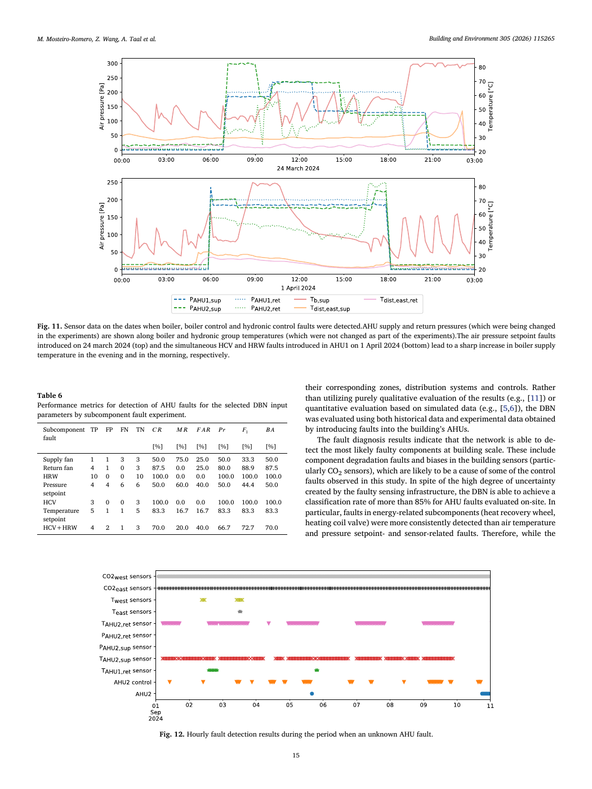
How to read this figureراهنمای خواندن شکل
Read the original labels and caption first, then use the explanation and evidence note below. Printed quantities are preserved separately from reviewer interpretation.ابتدا برچسبها و عنوان اصلی را بخوانید و سپس توضیح و یادداشت شاهد را بررسی کنید. مقدار چاپشده از تفسیر مرورگر جدا نگه داشته شده است.
Reader guidance · not an additional author claimراهنمای مطالعه · ادعای اضافی نویسنده نیستWhat this figure showsاین شکل چه نشان میدهد؟
Operational fault outputs during a suspected AHU issue complement occupant complaints.خروجی عملیاتی هنگام مشکل مشکوکAHUمکمل شکایت ساکن است.
Reported values & evidence limitsمقادیر گزارششده و حدود شواهد
Suspected real-world issue is not an independently labeled controlled experiment.مشکل مشکوک واقعی،آزمایش کنترلشده مستقل برچسبدار نیست.
Figure C.13
Graph & dependenciesگراف و وابستگیها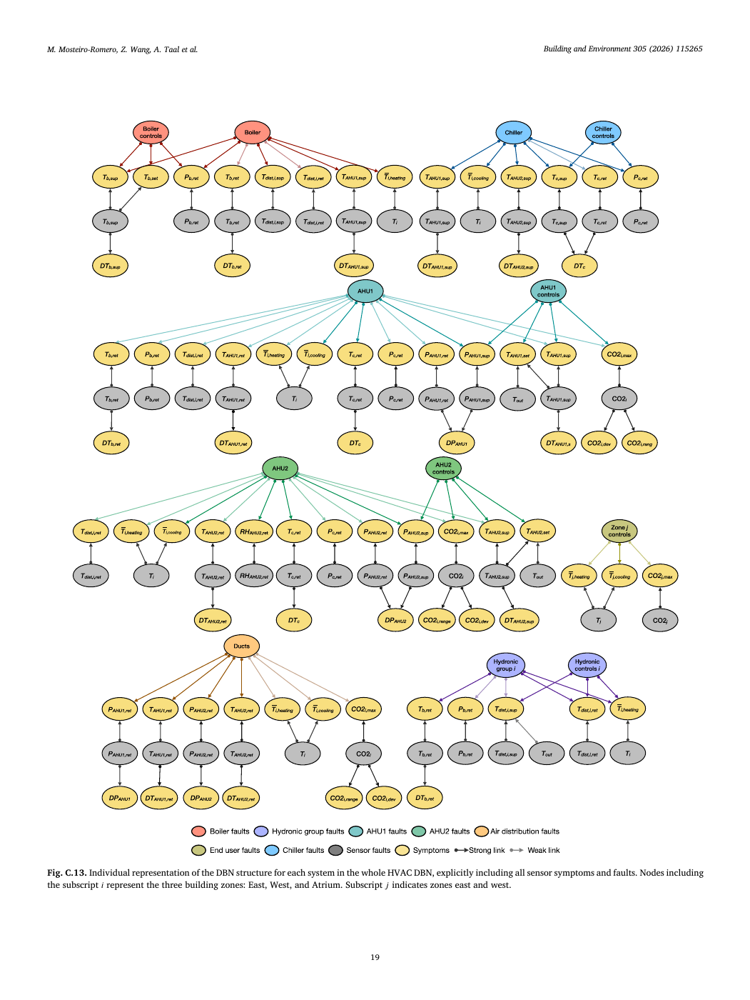
How to read this figureراهنمای خواندن شکل
Start with the node types and follow the connections using the paper’s notation. Distinguish faults, observed evidence and intermediate variables; graph connectivity alone is not a measured intervention effect.ابتدا نوع گره را با نمادگذاری مقاله مشخص و سپس اتصالها را دنبال کنید. خطا، شاهد مشاهدهشده و متغیر میانی را جدا کنید؛ اتصال گراف بهتنهایی اثر اندازهگیریشده مداخله نیست.
Reader guidance · not an additional author claimراهنمای مطالعه · ادعای اضافی نویسنده نیستWhat this figure showsاین شکل چه نشان میدهد؟
Appendix expands each system DAG with explicit individual sensor symptoms and faults.پیوست گراف هر سامانه را با نشانه و خطای حسگر منفرد بازمیکند.
Reported values & evidence limitsمقادیر گزارششده و حدود شواهد
Use expanded connections to audit grouped Fig.6; no numerical posterior series is introduced.اتصالات تفصیلی برای ممیزی شکل۶است؛سری پسین عددی تازه ندارد.
Tables & numerical evidenceجدولها و شواهد عددی
Table 1 · Overview of papers in the literature focusing on DBNs for whole-HVAC or cross-level FDD. Ref. Scope Systems Structure Parameter Evaluation Basis/Data source [7] Cooling andجدول1:دادهها ومقایسههای منبع
Table 1 provides: Overview of papers in the literature focusing on DBNs for whole-HVAC or cross-level FDD. Ref. Scope Systems Structure Parameter Evaluation Basis/Data source [7] Cooling and. Preserve the complete printed rows, units, conditions and footnotes in the source view; selected relevant numerical results are explained in this report.جدول1دادههای اصلی رابههمراه واحد،شرط وپانویس ارائه میکند؛اعدادمرتبط دربخش نتایج توضیح داده شدهاند وتمام سطرهادرنمایمنبع حفظ شدهاند.
Table 1 · PDF p. 4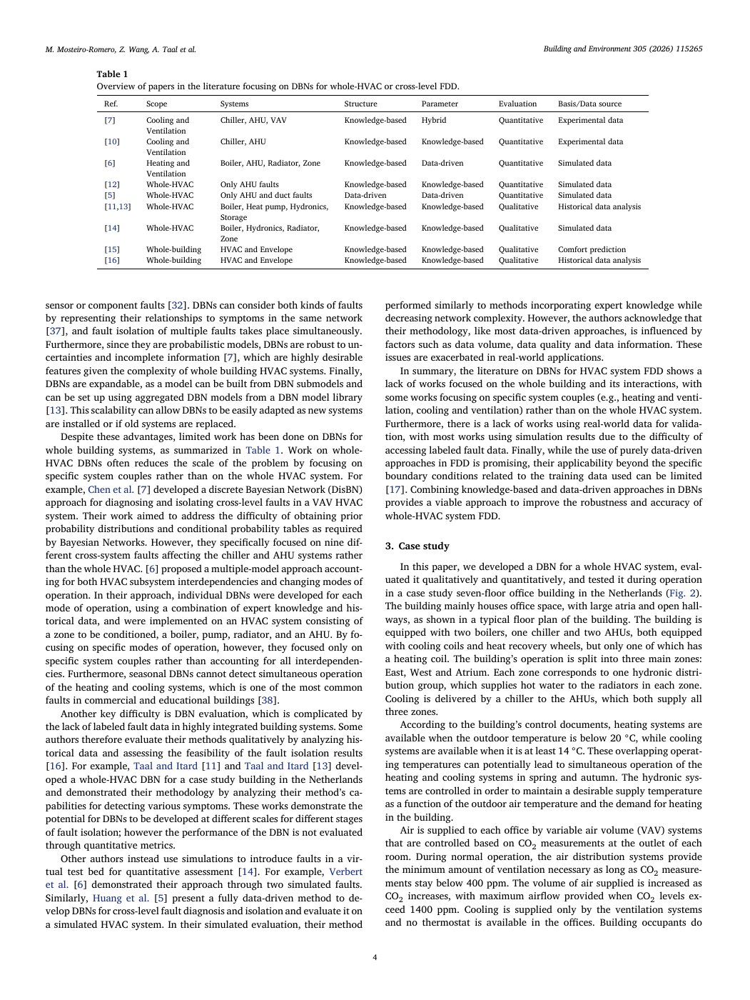
Table 2 · Knowledge-based thresholds defined for the first DBN symptom detection scenario. Thresholds marked as [*] were defined based on the build ing documentation, including HVAC system control documents, electriجدول2:دادهها ومقایسههای منبع
Table 2 provides: Knowledge-based thresholds defined for the first DBN symptom detection scenario. Thresholds marked as [*] were defined based on the build ing documentation, including HVAC system control documents, electri. Preserve the complete printed rows, units, conditions and footnotes in the source view; selected relevant numerical results are explained in this report.جدول2دادههای اصلی رابههمراه واحد،شرط وپانویس ارائه میکند؛اعدادمرتبط دربخش نتایج توضیح داده شدهاند وتمام سطرهادرنمایمنبع حفظ شدهاند.
Table 2 · PDF p. 7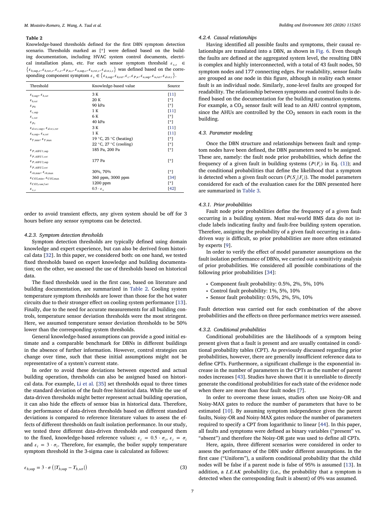
Table 3 · Model parameters assumed for DBN evaluation based on historical and experi mental data and operational testing. Knowledge-based parameters were assumed during historical evaluation, while all parameter assumptions were assessed asجدول3:دادهها ومقایسههای منبع
Table 3 provides: Model parameters assumed for DBN evaluation based on historical and experi mental data and operational testing. Knowledge-based parameters were assumed during historical evaluation, while all parameter assumptions were assessed as. Preserve the complete printed rows, units, conditions and footnotes in the source view; selected relevant numerical results are explained in this report.جدول3دادههای اصلی رابههمراه واحد،شرط وپانویس ارائه میکند؛اعدادمرتبط دربخش نتایج توضیح داده شدهاند وتمام سطرهادرنمایمنبع حفظ شدهاند.
Table 3 · PDF p. 8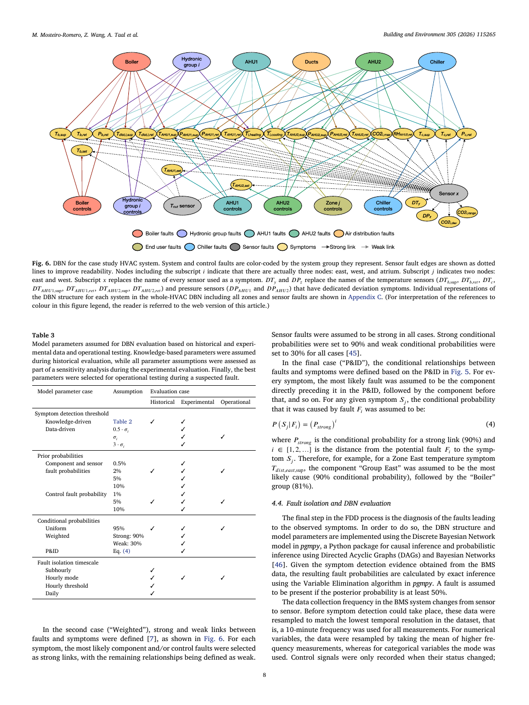
Table 4 · List of fault experiments conducted in the AHUs in the case study building. Faults were introduced in the control systems for the AHU fans, heat recovery wheels (HRW), heating coil valves (HCV) and in the pressure and temperature setpoints. Given that the experiments were injected into the control systems, all faults were detected as control faults.جدول4:دادهها ومقایسههای منبع
Table 4 provides: List of fault experiments conducted in the AHUs in the case study building. Faults were introduced in the control systems for the AHU fans, heat recovery wheels (HRW), heating coil valves (HCV) and in the pressure and temperature setpoints. Given that the experiments were injected into the control systems, all faults were detected as control faults.. Preserve the complete printed rows, units, conditions and footnotes in the source view; selected relevant numerical results are explained in this report.جدول4دادههای اصلی رابههمراه واحد،شرط وپانویس ارائه میکند؛اعدادمرتبط دربخش نتایج توضیح داده شدهاند وتمام سطرهادرنمایمنبع حفظ شدهاند.
Table 4 · PDF p. 10Table 5 · Performance metrics for detection of AHU faults for the three different conditional probability cases (“Uniform”, “Weighted” and “P&ID”) and for different symptom detection thresholds 𝜀𝑖 (literature-based fixed thresholds, “0.5⋅𝜎 ”, “𝜎” and “3⋅𝜎 ”) for a fault detection probability threshold of 50%. Values are shown as the mean (and standard deviation) of all runs of the model with different component, control andجدول5:دادهها ومقایسههای منبع
Table 5 provides: Performance metrics for detection of AHU faults for the three different conditional probability cases (“Uniform”, “Weighted” and “P&ID”) and for different symptom detection thresholds 𝜀𝑖 (literature-based fixed thresholds, “0.5⋅𝜎 ”, “𝜎” and “3⋅𝜎 ”) for a fault detection probability threshold of 50%. Values are shown as the mean (and standard deviation) of all runs of the model with different component, control and. Preserve the complete printed rows, units, conditions and footnotes in the source view; selected relevant numerical results are explained in this report.جدول5دادههای اصلی رابههمراه واحد،شرط وپانویس ارائه میکند؛اعدادمرتبط دربخش نتایج توضیح داده شدهاند وتمام سطرهادرنمایمنبع حفظ شدهاند.
Table 5 · PDF p. 12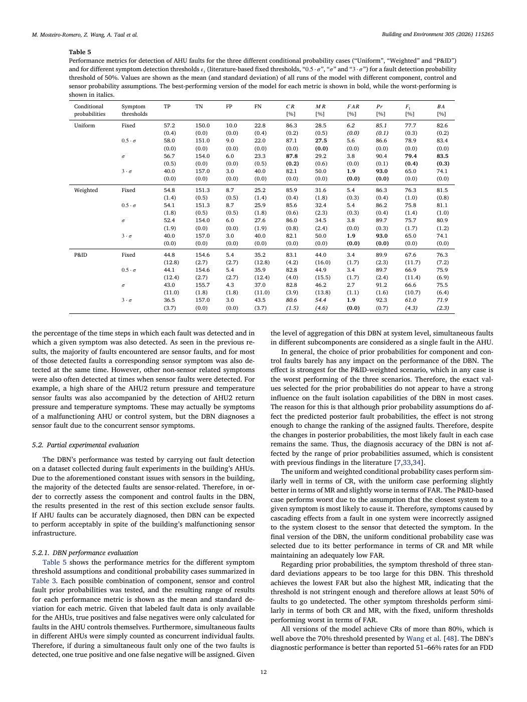
Table 6 · Performance metrics for detection of AHU faults for the selected DBN input parameters by subcomponent fault experiment. Subcomponentجدول6:دادهها ومقایسههای منبع
Table 6 provides: Performance metrics for detection of AHU faults for the selected DBN input parameters by subcomponent fault experiment. Subcomponent. Preserve the complete printed rows, units, conditions and footnotes in the source view; selected relevant numerical results are explained in this report.جدول6دادههای اصلی رابههمراه واحد،شرط وپانویس ارائه میکند؛اعدادمرتبط دربخش نتایج توضیح داده شدهاند وتمام سطرهادرنمایمنبع حفظ شدهاند.
Table 6 · PDF p. 15Table A.7 · Aggregated component, control and sensor faultsخطاهای تجهیز،کنترل وحسگر
The original aggregated component, control and sensor faults are retained with all rows and units in the source view. The report discusses selected numerical comparisons in context.خطاهای تجهیز،کنترل وحسگربههمراه تمام سطرها وواحدها درصفحه اصلی حفظ شده است؛مقایسه عددی منتخب درگزارش توضیح داده میشود.
Table A.7 · PDF p. 17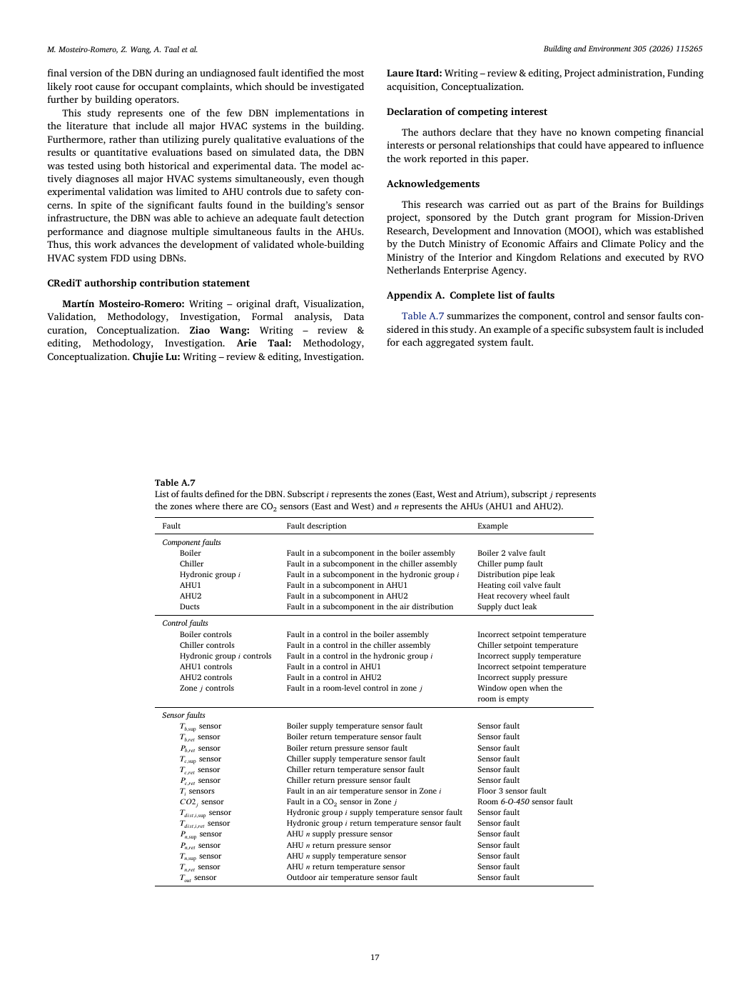
Table B.8 · Symptom definitions and detection thresholdsتعریف نشانه وآستانه
The original symptom definitions and detection thresholds are retained with all rows and units in the source view. The report discusses selected numerical comparisons in context.تعریف نشانه وآستانهبههمراه تمام سطرها وواحدها درصفحه اصلی حفظ شده است؛مقایسه عددی منتخب درگزارش توضیح داده میشود.
Table B.8 · PDF p. 18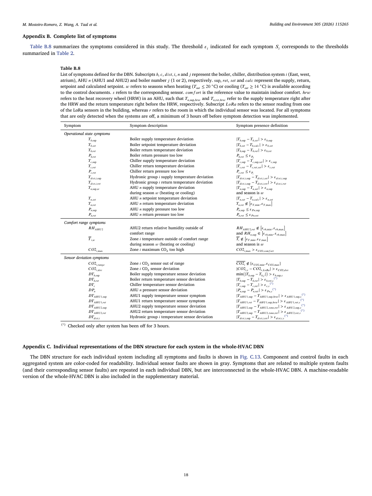
Critical analysis — reviewer assessmentتحلیل انتقادی — ارزیابی مرورگر
The 87.8% classification rate includes true negatives; report MR/F 1 and fault-label coverage alongside it. A diagnostic DAG evaluated on control injections does not establish recovery efficacy or five-family causal identifi ability.نرخ۸۷٫۸٪ شامل منفی درست است؛ عدمکشف، F1 و پوشش برچسب باید همراه آن گزارش شوند. ارزیابی گراف روی تزریق کنترل، بازیابی یا شناسایی پنج خانواده را ثابت نمیکند. Source · PDF p. 9Source · PDF p. 12
Role in our researchنقش مقاله در پژوهش ما
Why is it important to our research?چرا برای پژوهش ما مهم است؟
Direct evidence that whole-system diagnosis must handle interacting faults and unreliable evidence; high CR can coexist with substantial missed faults.نشان میدهد تشخیص کل سامانه باید خطاهای وابسته و شاهد نامطمئن را بپذیرد؛ دقت کلی بالا میتواند با عدمکشف زیاد همراه باشد. Source · PDF p. 12Source · PDF p. 16
What does it contribute to our research?چه سهمی در پژوهش ما دارد؟
Offers a transparent BN parameter-sensitivity and partial-validation protocol, plus a practical component/control/sensor separation for our causal evidence contracts.پروتکل شفاف حساسیت BN و اعتبارسنجی جزئی و تفکیک تجهیز/کنترل/حسگر برای قرارداد شاهد پروژه فراهم میکند. Source · PDF p. 7Source · PDF p. 8Source · PDF p. 9
How can we employ it?چگونه از آن استفاده کنیم؟
Adapt its observed/latent fault–symptom mapping and evaluate thresholds/calibration under restricted telemetry; retain separate metrics for single and simultaneous causes. Do not copy unavailable office sensor nodes into Alameda.نگاشت خطا–نشانه و ارزیابی آستانه را به تلهمتری محدود اقتباس کنیم و معیار تکخطا و همزمان را جدا نگه داریم؛ حسگر اداری ناموجود را به Alameda اضافه فرض نکنیم. Source · PDF p. 8Source · PDF p. 12
Should we implement it as a baseline?آیا باید آن را بهعنوان خطمبنا پیاده کنیم؟
Recommended candidate for an adapted probabilistic diagnostic baseline, alongside Huang EECL. Implement only the shared observable task, with declared graph/parameter changes; no exact reproduction claim. It does not substitute for a Dynamic SCM or intervention planner.نامزد پیشنهادی خطمبنای احتمالاتی اقتباسی کنار EECL است. فقط وظیفه مشترک قابل مشاهده با تغییرات اعلامشده پیاده شود؛ جایگزین SCM پویا یا برنامهریز مداخله نیست. Source · PDF p. 8Source · PDF p. 16
Original source pagesصفحات اصلی منبع
PDF page 1
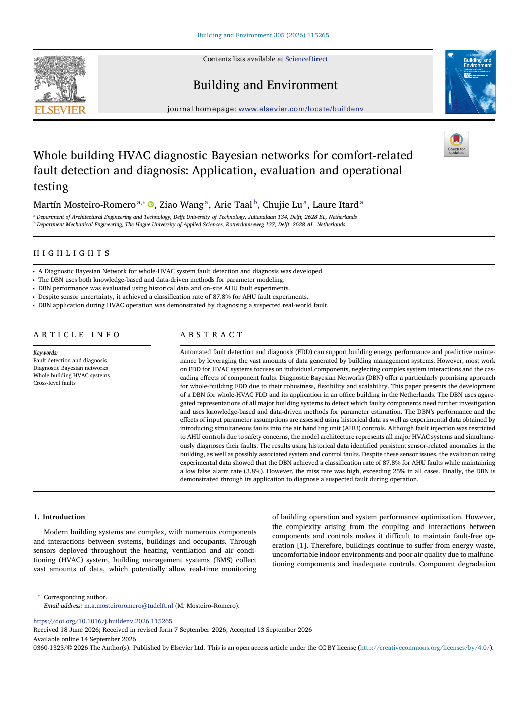
PDF page 2
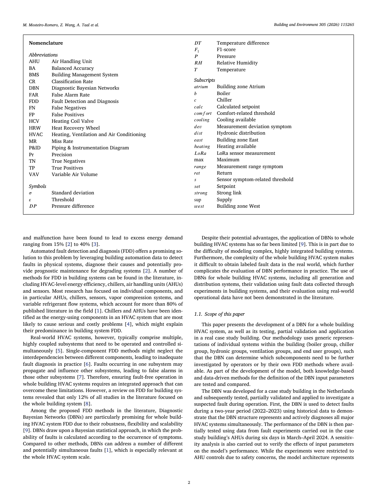
PDF page 3
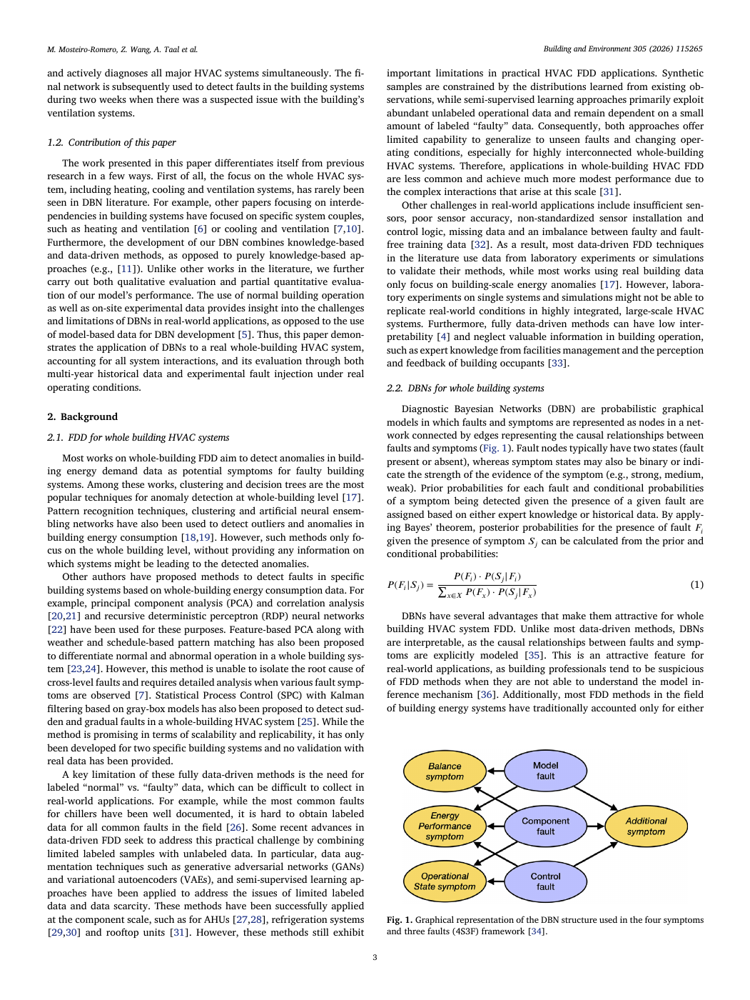
PDF page 9
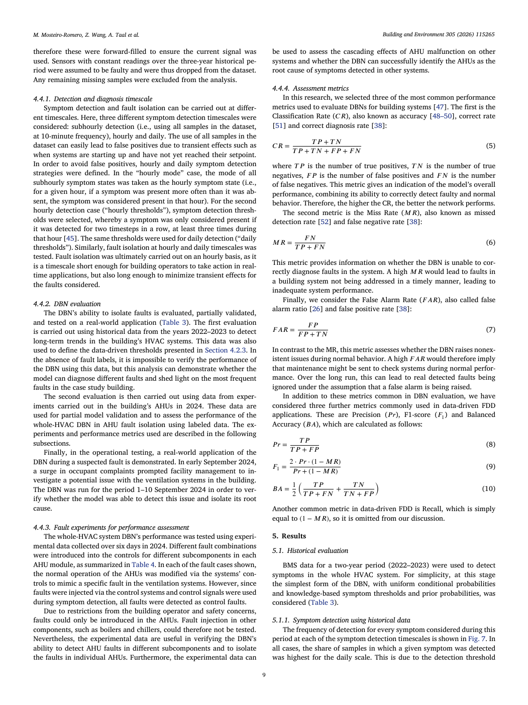
PDF page 13
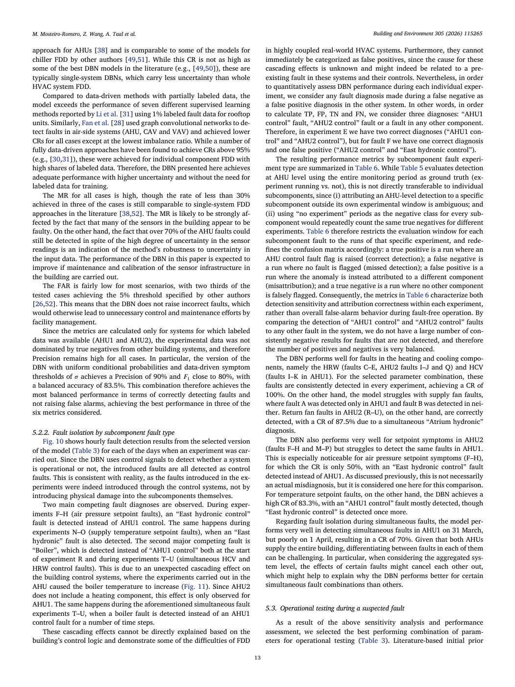
PDF page 14
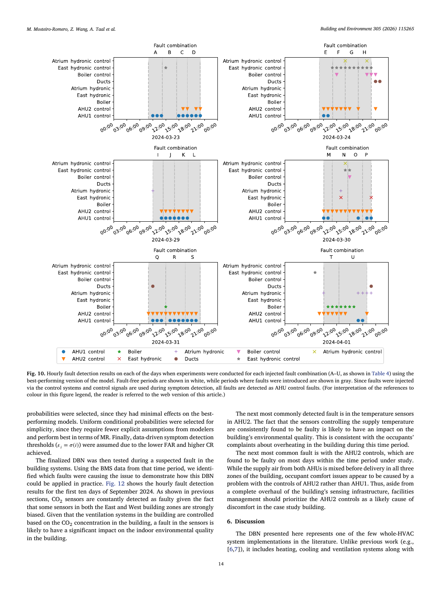
PDF page 16
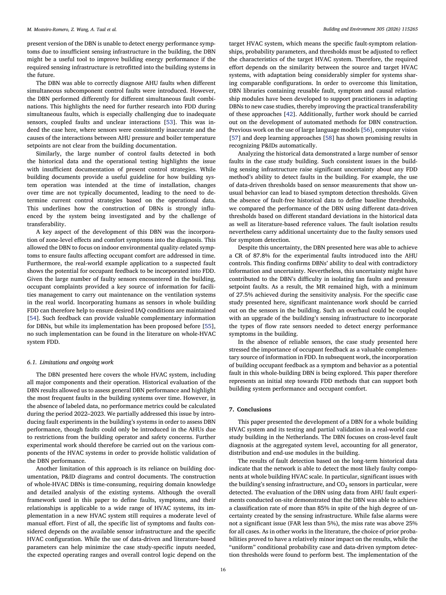
PDF page 20
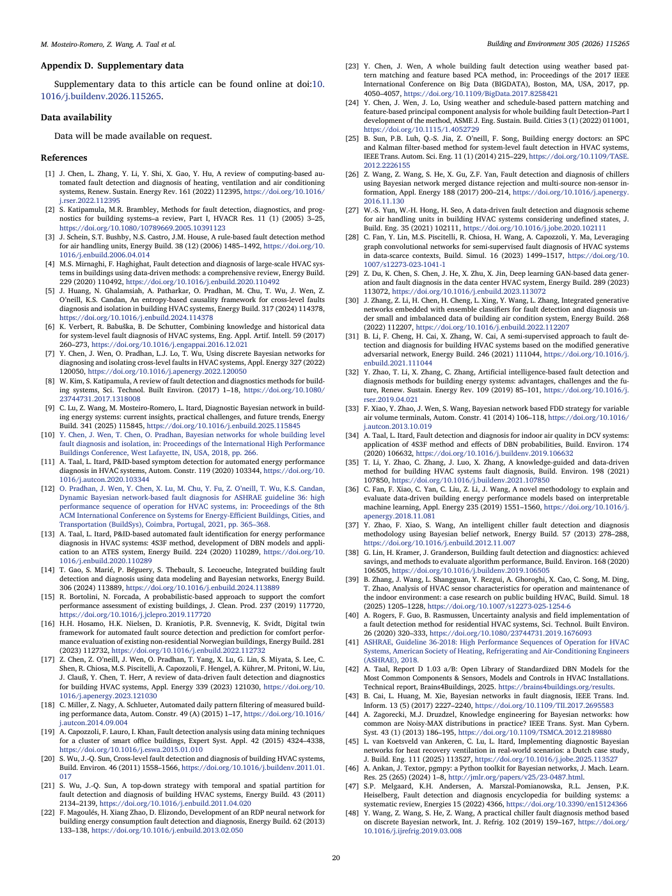
Full bibliographyکتابنامه کامل
Full bibliography transcribed from the source PDF. Original reference pages are the authority for formatting and extraction ambiguities; cited works were not independently analyzed just because they appear here.کتابنامه کامل از PDF منبع استخراج شده است. صفحه اصلی مرجع نگارش و ابهام استخراج است؛ درج منبع به معنی تحلیل مستقل آن اثر نیست.